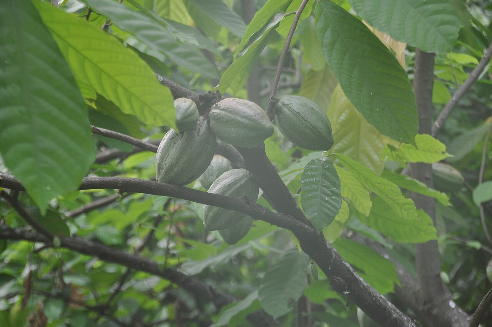

Culture de rente
Cacao
Theobroma cacao — la fève d'export des zones forestières
- Cycle 3 à 4 ans avant la première récolte significative, verger productif pendant 20 à 30 ans
- Mise à jour 2026-10-26
- Niveau de confiance partiel

Présentation et utilisations
Culture de rente majeure du Sud forestier ivoirien, conduite sous ombrage. La qualité de la fermentation et du séchage décide du prix obtenu autant que le rendement. Les vergers vieillissants et la réhabilitation sont le principal enjeu de la filière.
Climat et sols
Sols profonds, bien drainés, ferrallitiques, riches en matière organique ; pluviométrie de l'ordre de 1 400 à 2 000 mm bien répartie ; ombrage favorable en jeune âge comme à maturité (lumière tamisée). Éviter les bas-fonds engorgés et les pentes érodées sans couverture.
Variétés adaptées
Le matériel végétal disponible varie selon les pépinières et les projets : demander la liste des variétés et clones diffusés dans la zone auprès d'un service de vulgarisation ou d'un centre de recherche. Ne pas introduire de plants d'origine inconnue, surtout en zone touchée par le swollen shoot.
Calendrier cultural
Récolte principale d'octobre à mars, récolte intermédiaire de mai à août selon les zones. Pépinière ou semis direct, plantation en début de saison des pluies. Production étalée sur l'année.
Préparation du terrain
Défrichement sélectif en conservant les arbres d'ombrage utiles, sous-solage ou trouaison large, amendement organique au trou. Prévoir l'ombrage provisoire (bananier, légumineuses) puis l'ombrage permanent.
Semis et plantation
Pépinière en sachets à l'ombre, semis de fèves fraîches, ou greffage sur porte-greffe selon le matériel disponible. Plantation dès que les plants ont la taille et le système racinaire suffisants, en début de pluies.
Entretien, fertilisation, irrigation
Désherbage maîtrisé (couverture plutôt que sol nu), taille de formation puis d'entretien, élimination des gourmands, gestion de l'ombrage, apports organiques réguliers. Surveillance des mirides et des pourritures de cabosses.
Engrais : quoi, combien, quand
Le cacaoyer répond à la matière organique et à l'ombrage avant tout. Un sol nu s'appauvrit vite : couvrir et recycler les coques.
| Apport | Dose | Quand | Comment |
|---|---|---|---|
| OrganiqueCompost ou fumier bien décomposé | 5 à 10 t/ha | Début de saison des pluies | En couronne autour du tronc, sans contact |
| OrganiqueCendres ou coques de cacao compostées | retour au sol de la récolte | Après écabossage | Compostage puis épandage |
| MinéralEngrais potassique et phosphoré (selon analyse) | à définir avec l'analyse de sol | Saison des pluies | En couronne, enfoui légèrement |
Doses indicatives par hectare, à ajuster après analyse de sol et selon l'âge du verger.
Maladies, ravageurs et prévention
Le cacao swollen shoot virus impose l'éradication réglementaire des arbres atteints : signaler tout symptôme (rougeur, marbrures, renflement des rameaux) et ne pas déplacer de matériel végétal. La pourriture brune des cabosses se limite par l'hygiène (retrait des cabosses malades) et le drainage. Les mirides se surveillent et se traitent selon les recommandations officielles.
Récolte et post-récolte
Récolte manuelle des cabosses mûres, écabossage, fermentation en tas ou en caisses pendant plusieurs jours, séchage lent à l'ombre puis au soleil. Étaler et retourner régulièrement pour éviter les moisissures.
Conservation et transformation
Fèves sèches stockées dans des sacs propres, sur palettes, à l'abri de l'humidité et des odeurs. Contrôler l'humidité avant stockage long.
Coûts, rendements et débouchés
La marge dépend du prix bord champ, du rendement du verger et du coût de la réhabilitation. Le prix officiel est fixé par campagne : vérifier le barème en vigueur auprès des sources officielles avant tout calcul.
Tutoriel étape par étape
- Choisir la parcelle
Sol profond et drainé, à l'abri du vent, avec de l'ombre disponible ou plantée en même temps. Un bas-fond qui garde l'eau tue les racines.
- Préparer le terrain et l'ombre
Trouaison large, matière organique au fond, ombrage provisoire par bananiers ou légumineuses avant de planter.
- Planter au bon moment
Planter en début de saison des pluies, collet au niveau du sol, tuteurer si nécessaire, ombrager les jeunes plants.
- Surveiller le swollen shoot
Observer les marbrures et rougissements des jeunes feuilles. Un arbre suspect ne se déplace pas : appeler le service technique.
- Récolter et fermenter
Cabosses mûres récoltées, fermentation plusieurs jours puis séchage lent : c'est là que se joue la qualité de la fève.
Sources, vérification et limites
- Base de connaissances AGROGUIDCI · knowledge/agronomie.md — zones agroécologiques, cultures de rente (consulté le 2026-10-26)
- ANADER · Appui-conseil aux producteurs (consulté le 2026-10-26) — consulter
Limites de cette fiche. Aucun rendement, aucun prix et aucun itinéraire ne sont garantis : les chiffres varient avec l'âge du verger, la zone, l'ombrage et la qualité de la fermentation. La réhabilitation d'un verger est un investissement de plusieurs années.
Dernière mise à jour : 2026-10-26. Les prix, rendements et calendriers locaux ne sont mentionnés que lorsqu'ils sont documentés ; dans le doute, la fiche le dit.